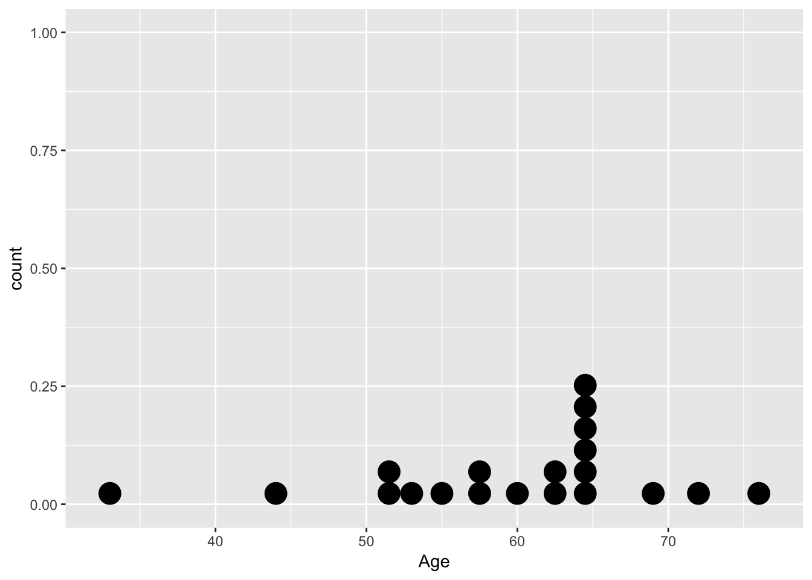
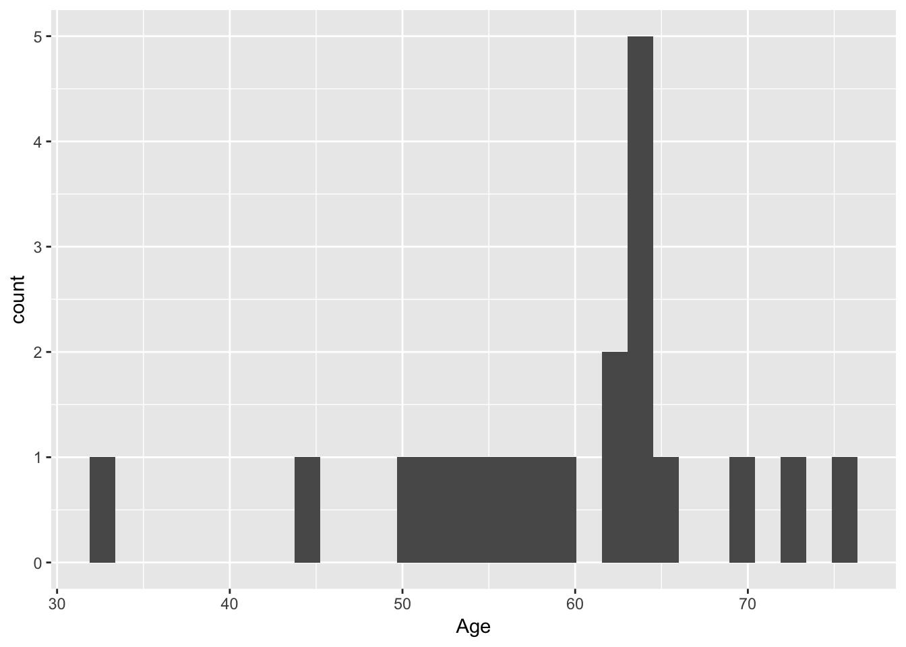
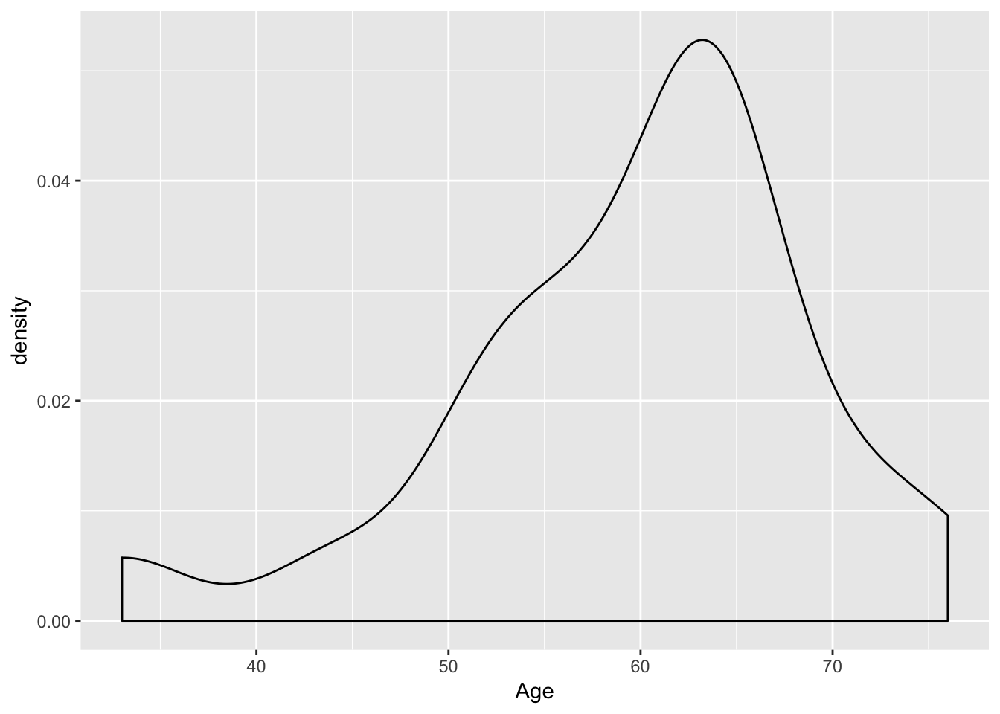

Chapter 3 Single variable
# Create a stem and leaf plot
stem(data$Age)
The decimal point is 1 digit(s) to the right of the |
3 | 3
4 | 4
5 | 123578
6 | 0234444459
7 | 26# Create a frequency distribution table
table(data$Age)
33 44 51 52 53 55 57 58 60 62 63 64 65 69 72 76
1 1 1 1 1 1 1 1 1 1 1 5 1 1 1 1 # Create a dot plot
library(ggplot2)
ggplot(data = data, aes(x = Age)) +
geom_dotplot()`stat_bindot()` using `bins = 30`. Pick better value with `binwidth`.
# Create a histogram
library(ggplot2)
ggplot(data = data, aes(x = Age)) +
geom_histogram()`stat_bin()` using `bins = 30`. Pick better value with `binwidth`.
# Create a density plot
library(ggplot2)
ggplot(data = data, aes(x = Age)) +
geom_density()